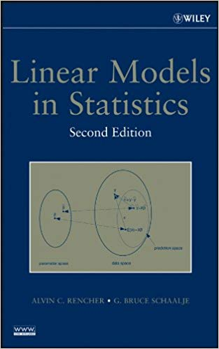
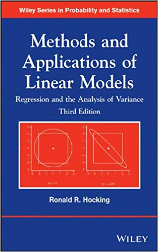

Lecture 2
Refresher of basic statistical models
WILD(FISH) 8390
Richard Chandler
All ANOVAs and fixed-effects regression models are linear models.
You must understand linear models before you can apply more advanced models such as GLMs, GAMS, hierarchical models etc…


Simple linear regression is the most basic linear model. \[%% y_i = \beta_0 + \beta_1 x_i + \varepsilon_i \qquad \qquad %% \varepsilon_i \sim \mathrm{Norm}(0, \sigma^2) \mu_i = \beta_0 + \beta_1 x_i \qquad \qquad y_i \sim \mathrm{Norm}(\mu_i, \sigma^2)\]
\(y\) is variously called:
response variable
outcome variable
dependent variable
It’s worse for \(x\)
predictor variable
explanatory variable
independent variable
covariate, exposure, etc…
We observe \(x\) and \(y\). The expected value of \(y_i\) is \(\mu_i\).
We’d like to estimate \(\beta_0\) and \(\beta_1\), called the “coefficients”.
A residual is \(\varepsilon_i=y_i-\mu_i\). \(\sigma^2\) is the variance of the residuals.
Suppose your data look like this:
We will use JAGS and the R packages ‘rjags’ and ‘jagsUI’. JAGS can be downloaded here.
The basic steps of Bayesian analysis with JAGS are:
Write a model in the BUGS language in a text file
Put data in a named list
Create a function to generate random initial values
Specify the parameters you want to monitor
Use MCMC to draw posterior samples
Use posterior samples for inference and prediction
The model is in a text file named lm.jag
Now, put the data in a list and pick some initial values
Use MCMC to draw posterior samples:
A more general depiction of linear models:
\[\begin{gathered} \mu_i = \beta_0 + \beta_1 x_{i1} + \beta_2 x_{i2} + \cdots + \beta_p x_{ip} \\ y_i \sim \mathrm{Normal}(\mu_i, \sigma^2) \end{gathered}\]
where the \(\beta\)’s are coefficients, and the \(x\) values are predictor variables (or dummy variables for categorical predictors).
You must be able to interpret the \(\beta\) coefficients for any model that you fit to your data. A linear model might have dozens of continuous and categorical predictors variables, with dozens of associated \(\beta\) coefficients. Linear models can also include polynomial terms and interactions.
The intercept \(\beta_0\) is the expected value of \(y\), when all \(x=0\).
If \(x_1\) is a continuous explanatory variable:
\(\beta_1\) can usually be interpreted as a slope parameter.
In this case, \(\beta_1\) is the change in \(y\) resulting from a 1 unit change in \(x_1\) (while holding the other predictors constant).
Things are more complicated for categorical explanatory variables (i.e., factors) because they must be converted to dummy variables. There are many ways of creating dummy variables. In R, the default method for creating dummy variables from unordered factors works like this:
One level of the factor is treated as a reference level.
The reference level is associated with the intercept.
The \(\beta\) coefficients for the other levels of the factor are differences from the reference level.
Fit a linear model to the abundance data
The residuals don’t have to be normally distributed.
The response variable can be binary, integer, strictly-positive, etc...
The variance is not assumed to be constant.
Useful for manipulative experiments or observational studies, just like linear models.
Linear model
\[ \begin{gathered} \mu_i = \beta_0 + \beta_1 x_{i1} + \beta_2 x_{i2} + \cdots + \beta_p x_{ip} \\ y_i \sim \mathrm{Normal}(\mu_i, \sigma^2) \end{gathered} \]
Generalized Linear model
\[ \begin{gathered} g(\mu_i) = \beta_0 + \beta_1 x_{i1} + \beta_2 x_{i2} + \cdots + \beta_p x_{ip} \\ y_i \sim f(\mu_i) \end{gathered} \]
where
\(g\) is a link function, such as the log or logit link
\(f\) is a probability distribution such as the binomial or Poisson
An inverse link function (\(g^{-1}\)) transforms values from the \((-\infty,\infty)\) scale to the scale of interest, such as \((0,1)\) for probabilities.
The link function (\(g\)) does the reverse.
| Distribution | link name | link equation | inverse link equation |
|---|---|---|---|
| Binomial | logit | \(\log(\frac{p}{1-p})\) | \(\frac{\mu}{1 + \exp(\mu)}\) |
| Poisson | log | \(\log(\lambda)\) | \(\exp(\mu)\) |
| Distribution | link name | link in R | inv link in R |
|---|---|---|---|
| Binomial | logit | qlogis |
plogis |
| Poisson | log | log |
exp |
Logistic regression is a specific type of GLM in which the response variable follows a binomial distribution and the link function is the logit.
It would be better to call it “binomial regression” since other link functions (e.g. the probit) can be used
Appropriate when the response is binary or a count with an upper limit Examples:
Presence/absence studies
Survival studies
Disease prevalence studies
$$
where:
\(N\) is the number of “trials” (e.g. coin flips)
\(p_i\) is the probability of success for sample unit \(i\)
Properties
The expected value of \(y\) is \(Np\)
The variance is \(Np(1-p)\)
Bernoulli distribution
The Bernoulli distribution is a binomial distribution with a single trial (\(N=1\))
Logistic regression is usually done in this context, such that the response variable is 0/1 or No/Yes or Bad/Good, etc\(\dots\)
\[ \begin{gathered} \mathrm{logit}(p_i) = \beta_0 + \beta_1\mathrm{ELEV}_i \\ y_i \sim \mathrm{Bern}(p_i) \end{gathered} \]
$$
where:
\(\lambda_i\) is the expected value of \(y_i\)
Useful for:
Count data
Number of events in time intervals
Other types of integer data
Properties
The expected value of \(y\) (\(\lambda\)) is equal to the variance
This is an assumption of the Poisson model
Like all assumptions, it can be relaxed if you have enough data
First, create a covariate:
Next, pick values for the coefficients and compute \(\lambda_i = E(y_i)\):
Now, simulate the response variable \(y\):
Finally, fit the model:
The model is in a text file named glm.jag
Now, put the data in a list and pick some initial values
Use MCMC to draw posterior samples:
Create a self-contained R script (or better yet an Rmarkdown file) to do the following:
Simulate logistic regression data according to \(y_i \sim \mathrm{Bern}(p_i)\) and \(\mathrm{logit}(p_i) = \beta_0
+ \beta_1 x_i\) with \(\beta_0=-1\) and \(\beta_1=1\). Generate the covariate using x <- rnorm(n=100). Note that you will need to use the rbinom function to simulate Bernoulli outcomes.
Fit a logistic regression model to the simulated data (\(y\) and \(x\)) using the glm function. Create a figure showing \(x\) and \(y\) with the fitted regression line. Use predict to get the fitted line.
Fit the logistic regression model in JAGS. Use \(\mathrm{Normal}(0, var=10)\) priors for the regression coefficients.
Compare and intepret the estimates of \(\beta_0\) and \(\beta_1\) from the classical analysis and the Bayesian analysis.
Upload your .R or .Rmd file to ELC by 5:00 PM Monday.